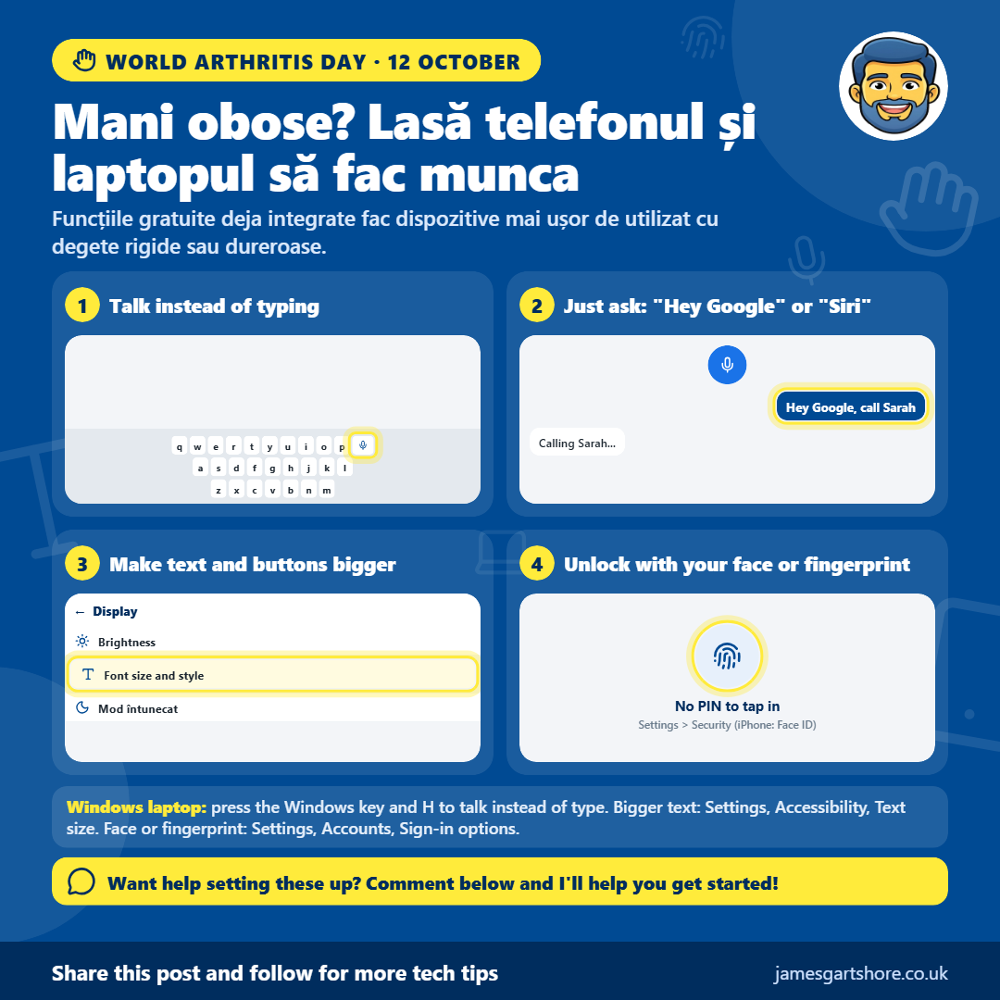

Mani obose? Lasă telefonul și laptopul să fac munca
De James Gartshore · · Sănătate și bunăstarePe scurt
- Vorbiți în loc de a scrie: Vorbiți mesajele, e-mailurile și căutările și ele sunt scrise pentru voi. (Telefon: apăsați pe microfonul tastaturii; laptop Windows: apăsați Windows key + H)
- Doar cereți: Faceți apeluri, trimiteți SMS-uri și setați amintiri fără a atinge ecranul. (Android: spuneți "Hey Google"; iPhone: spuneți "Siri" sau "Hey Siri")
- Text și butoane mai mari: Mai ușor de citit și mai ușor de apăsat corect de prima dată. (Telefon: Setări > Afișare > dimensiunea textului; Windows: Setări > Accesibilitate > dimensiunea textului)
- Decuplare fără PIN: Folosiți fața sau degetul în loc de a apăsa un cod. (Telefon: Setări > Securitate, sau Face ID; Windows: Setări > Conturi > Opțiuni de autentificare)

Bună tuturor, astăzi este Ziua Artritei Mondiale, așa că vreau să vă împărtășesc câteva funcții ale telefonului și laptopului vostru care pot face viața mult mai ușoară dacă aveți mâini obositoare, rigide sau dureroase.
Timpita pe un ecran mic poate fi foarte neconfortabil, dar nu trebuie să fie. Timita vocală vă permite să vorbiți mesajele, e-mailurile și căutările, iar telefonul le tastează pentru voi. Pe un telefon, doar apăsați pe micul microfon al tastaturii și începeți să vorbiți. Pe un laptop Windows, apăsați Windows key și H împreună, și același lucru funcționează în aproape orice program.
Puteți și lăsa telefonul să facă lucruri pentru voi fără a atinge ecranul deloc. Pe un telefon Android, spuneți "Hey Google", iar pe un iPhone, spuneți "Siri" sau "Hey Siri", urmat de ceea ce doriți, cum ar fi "apela Sarah", "trimite un mesaj lui John" sau "amintime-mă să ia tabletele la ora 18:00". Dacă nu răspunde, poate că trebuie să îl activați mai întâi în setările telefonului vostru.
Îmbunătățirea textului și a butoanelor poate ajuta și, deoarece este mai ușor de citit și mult mai ușor de apăsat corect de prima dată. Pe un telefon, mergeți la Setări, apoi Afișare, și căutați opțiunea de dimensiunea textului sau a fontului. Pe un laptop Windows, mergeți la Setări, apoi Accesibilitate, apoi dimensiunea textului.
Dacă atestarea unui PIN sau a parolei este complicată, puteți debloca telefonul folosind fața sau degetul. Veți găsi acest lucru în Setări (Settings) telefonului, sub Securitate (Security), sau Face ID pe un iPhone. Multe laptopuri Windows mai noi pot face același lucru, ceea ce puteți configura în Setări (Settings), apoi Conturi (Accounts), apoi Opțiuni de autentificare (Sign-in options).
Toate acestea sunt gratuite și sunt deja incluse în dispozitivele dumneavoastră, așa că nu trebuie să cumpărați sau să descărcați nimic în plus.
Dacă doriți ajutor pentru a configura oricare dintre acestea, trimiteți-mi un mesaj și voi face tot posibilul să vă ajut.
Sper că vă ajută, și nu ezitați să îl transmiteți oricui care ar putea să îl găsească util.